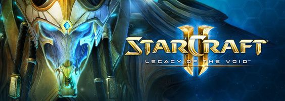

Starcraft
스타크래프트의 세 종족은 각각 특유의 개성과 플레이 스타일을 가지고 있으며, 종족별로 매우 독특하고 다양한 유닛과 건물을 갖추고 있습니다. 하나의 종족을 선택해 완벽하게 익히거나 세 종족 모두를 플레이해보세요!
여덟 가지 독특한 환경에서 기계화된 테란, 사이오닉 전사 프로토스, 진화하는 외계 생명체 저그를 지휘해 적을 압도하십시오. 전쟁이 끊이지 않는 먼 미래 환경에서 기지를 건설하고 유닛을 실시간으로 지휘해야 합니다. 캠페인을 완료하고 온라인에서 개인전 또는 팀전을 통해 다른 플레이어와 실력을 겨룰 수 있습니다. 스타크래프트의 핵심 요소인 개성 넘치는 종족을 지휘해 미래의 전장을 지배하십시오.
종족
테란

"테란은 오래 전 지구를 떠난 개척자들의 후손이며 쇠퇴하는 연합의 지배를 받습니다. 외딴 개척 행성의 보안관 짐 레이너는 엄청난 사이오닉 능력이 있는 암살자 사라 케리건과 자유의 투사들을 만나 무시무시한 외계 종족 프로토스와 저그 사이에서 생존을 도모합니다. 얼마 지나지 않아 항성계 전체가 전쟁터로 변하자 레이너는 자신이 엄청난 일에 휘말리게 됐음을 깨닫습니다."
프로토스

"유구한 역사를 자랑하는 프로토스는 구성원 전체가 칼라라고 부르는 사이오닉 능력으로 연결되어 조화 속에서 살았습니다. 칼라에 연결하기를 거부하는 이들은 춥고 어두운 우주로 추방당했습니다. 시간이 흘러 프로토스는 위대한 사회를 건설했지만, 융통성 없는 계급 체계는 반란의 씨앗이 됩니다. 실종된 전임자를 찾기 위해 떠난 젊은 집행관 아르타니스는 저그를 발견하고 독단적으로 행동하기 시작합니다."
저그

"오랫동안 은하계 변두리를 떠돌던 저그는 인류가 정착한 코프룰루 구역을 찾아와 마주치는 모든 행성을 감염시키고 생물을 말살합니다. 하지만 짐승의 본능으로 행동하는 저그 무리 뒤에는 종족의 유전적 한계를 극복하고 진화하기를 원하는 존재가 도사리고 있습니다."
돌아온 실시간 전략게임!
여덟 가지 독특한 환경에서 기계화된 테란, 사이오닉 전사 프로토스, 진화하는 외계 생명체 저그를 지휘해 적을 압도하십시오. 전쟁이 끊이지 않는 먼 미래 환경에서 기지를 건설하고 유닛을 실시간으로 지휘해야 합니다. 캠페인을 완료하고 온라인에서 개인전 또는 팀전을 통해 다른 플레이어와 실력을 겨룰 수 있습니다. 스타크래프트의 핵심 요소인 개성 넘치는 종족을 지휘해 미래의 전장을 지배하십시오.
| 종족 | Terran | Protoss | Zerg | |||
| 일꾼 | SCV | Prove | Drone or (Larva) | |||
| 근접 지상 유닛 | Marine , Ghost | Zealot, Dark Templar, Archo | Zergling, Ultralisk, Infested Terran | |||
| 원거리 지상유닛 | Vulture, Siege Tank, Goliath | Dragoon, Reaver | Hydralisk, Lurker, | |||
| 공중 유닛 | Dropship, Wraith, Science Vessel, Valkyrie, Battlecruiser | Shuttle, Corsair, Scout, Carrier, Arbiter | Mutalisk, Scourge, Devourer, Guardian, Queen | |||
| 정찰대 | Science Vessel | Observer | Overlord | |||
| 마법 유닛 | Medic | High Templar, Dark Archon, Arbiter | Defiler, Queen | |||